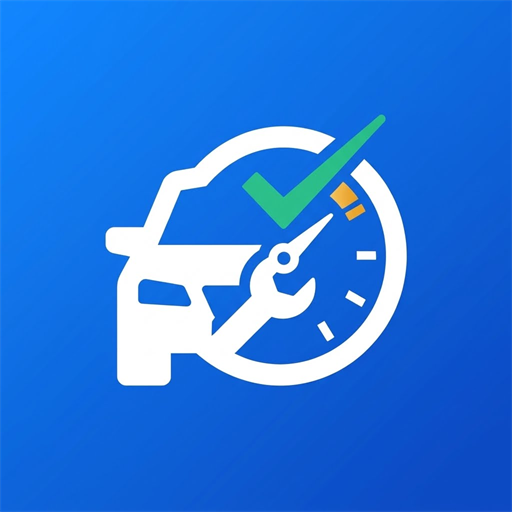

Autos y motos
Guarda tus vehículos con nombre, kilometraje y foto opcional.
El cuidado de tus vehículos, al día.
Organiza tus autos y motos, registra mantenimientos y consulta sus próximos avisos por fecha o kilometraje.
Acceso limitado a participantes autorizados. La descarga pública todavía no está disponible.

Conoce cada función. Selecciona una imagen para verla con más detalle.
Imágenes promocionales con datos de ejemplo. La apariencia puede variar según la versión y el dispositivo.
Guarda tus vehículos con nombre, kilometraje y foto opcional.
Registra servicios, notas y fotografías en la ficha de cada vehículo.
Consulta los mantenimientos próximos y vencidos.
Conserva tus registros y fotos mediante copias manuales o copias privadas de Google Drive.
Indica el nombre de la app y cuéntanos cómo podemos ayudarte.